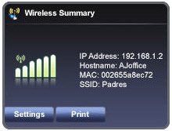
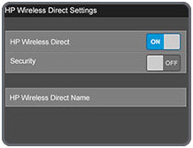
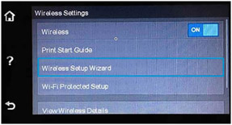

HP DESKJET 5810 PRINTER SETUP AND INSTALL
- For a Wireless or an Ethernet connection : The printer will be automatically detected on your Windows RT after being connected on your network. The driver installation starts automatically for your printer.
- For a USB connection : To any viable USB port on the printer, connect your cable. Your Windows RT will automatically detect the built-in print driver and install it.
- If you are unable to install the print driver, open our support website on your browser and look for the document pertaining to driver installation issues.
HOW TO INSTALL THE IN-BUILT PRINT DRIVER
If your printer is connected to your network, the print driver will get installed automatically.
PRINTING FROM DESKTOP APP
Using a desktop app like Microsoft Word, print a document on your printer.
Note : The steps given are applicable for Windows RT and Windows 8.
- Open the desktop app that you want to print from.
- Click on File and then select Print to open the print window.
- Click on your printer model in the Print window that opens.
- Click on OK to proceed to print.
PRINTING FROM THE START SCREEN APP
Use any application on the start screen such as the internet browser to print a photo or document by making use of the devices option in the Charms bar.
Note : Not all apps have the option to print from it. It is the app developer’s choice to include a print from option on the app.
- Open the start screen app that you want to print from on your Start screen.
- Open the required app and move the cursor to the upper right or lower right corner of your screen to open the Charms bar.
- Click on Devices and then click on your printer and proceed to print.
How to check the supply levels for the in-built print driver
- Print a Printer information sheet or a self-test page.
- The ink levels may be also displayed on your printer control panel.
- Use the HP AiO application to check the printer status and the supply levels on your printer.
123 HP DESKJET 5810 SETUP MOBILE PRINTING
123 HP Deskjet 5810 Google Cloud Print setup
- Switch on your printer.
- Choose the Chrome browser, and log in with your Google account.
- Press the Chrome menu icon, after that choose Settings from the drop-down menu.
- Scroll down and pick Show advanced settings… from the Settings window.
- Then select Manage button by scrolling down to Google Cloud Print.
- If Google Cloud Print discovers any printer on the network.
- Incase if the printer gets listed below New devices, click on Register, and thenclickRegister again to make sure and then print the confirmation page.
- Some printers need this registration to be completed in the printer control panel.
- If your printer is shown below My devices, then your printer is already registered with Google Cloud Print.
- Click on Manage to view your Google Cloud Print printers that have already been registered.
- If your printer is not shown, then ensure that the printer is connected to your network. You may also try connecting with the printer’s email address.
PRINT THROUGH GOOGLE CLOUD PRINT
123 HP Deskjet 5810 non-eprint Setup
MOBILE PRINTING ON HP NON E-PRINT
If you cannot connect to the wireless network, use the guides given below to troubleshoot.
- Verify the name of the network your printer is connected to and make sure that Wi-Fi is switched on.

- Confirm that the printer and smartphone are connected to the same network.

- The HP e-Print app is a secured cloud based service that enables you to print on any web enabled printer through email. This a stress free alternative to USB transfers.
HP Deskjet 5810 eprint
HOW TO INSTALL EPRINT
Apple products
- On your mobile device, open the App Store to select and install the HP e-Print app.
- In the Welcome to HP e-Print window, follow the instructions provided.
- Enter your email id and click on Activate using your email. Select Activate to receive the Activation Code.
- Take note of the PIN number displayed in the email and type the code in the application to setup.
- Enter all the required data preferences and select Done.
Android products
- Install the HP e-Print application from your play store.
- Enter the corresponding user data and select Done.
- Select Add email Account and use the instructions provided to enable access to media and storage.
Print Photos on your mobile device
- Open the HP e-Print application on your mobile device.
- Click on Photos.
- Choose the desired photo and click on Edit to make modifications.
- Click Done to save all the changes you have made.
- Click on Print to start printing.
HP Deskjet 5810 Airprint
- AirPrint is a mobile printing solution provided with the Apple iOSv4.2 and later mobile operating systems.
- Users of iPad, iPhone, and iPod touch can print wirelessly to all ePrint-enabled HP printers which is connected to the same local wireless network.
- Almost all HP printers which are released in 2010 and later, support AirPrint.
- Most of the Apple apps assist AirPrint, which includes Safari, Mail, Photos, and iWork.
- Moreover, alternate additional apps available in the App Store are supported.
- In the app, Select the Action icon.
- Some apps may not have an Action icon. In case if the icon does not get displayed, one cannot print from that specific app with AirPrint.
- Then touch Print in order to print with AirPrint.
HP APPLE AIRPRINT
Note:
Incase if the Action icon or Print button is not viewed in an app, then the app will not assist AirPrint at this time.
HP DESKJET 5810 WIRELESS PROTECTED SETUP
- In the printer control panel, locate the Wireless button. Now, press and hold this button for 3 seconds.
- The wireless light will start blinking.
- In your wireless access point or wireless router, press and hold the WPS button for 3 seconds.
- Please wait for around 2 minutes.
- If the printer gets connected successfully, then the wireless light will stop blinking and remains fully ON.
Connect your wireless HP Printer to wireless router using WPS
HP DESKJET 5810 REMOTE APP
HP All-in-One Printer Remote app – Features
- Setup the wireless network: Make use of the mobile phone in order to connect the printer to a wireless network.
- Only certain printer models have the printer setup feature of the HP AiO Printer Remote app is available.
- The printers which support the printer setup feature, get into Mobile Printing Solutions Compatible with HP Printers.
- Printing from the mobile phone: Employ the use of the mobile device in order to print photos, PDfs and more.
HP DESKJET 5810 CONNECT USING USB
- Confirm that the computer has been switched on and is connected to an active and functional internet connection.
- Switch on your printer.
- Connect the USB cable to the port provided on the rear of your printer. Connect the other end of the USB cable to the computer.
- A window may be displayed saying Found a new hardware. Perform the instructions displayed when prompted to install the driver.
- Try to print.
- If the print job is successful, the driver installation is complete and you need not perform the rest of the steps in this document.
- If the print job was unsuccessful, continue performing the steps given in this document.
HP DESKJET 5810 WIRELESS SETUP
- The Wireless Setup Wizard gives you an easy way to setup and manages your printer wireless connection.
- Tap the Wireless icon on the printer control panel, and then click the Wireless Menu icon.

- Tap Wireless Settings, then tap Wireless Setup Wizard.
- Click your wireless network and then proceed the promoted instructions on the printer control panel to connect your printer.
Connecting your printer wirelessly.
123 HP PRINTER TROUBLESHOOTING
RESET HP DESKJET 5810 PRINTER
- Remove the printer queue from the printer’s list and then add it again. Doing this will create a new printing session.
- Check whether your Mac computer has a live internet connection. From the list of printers, click your HP printer, and then click the Minus button (-) at the bottom of the list to delete it.
- Click the Add button (+) now.
- To add your printer to the printer’s list, find the name of your HP printer, select it from the list, and then click Add. Make sure you don’t select an HP Fax driver.
- If you don’t find your printer in the printer list, check if your printer is connected to a network and is turned on. Make sure your printer is ready to function.
- Click Print Using or Use, and then click the name of your HP printer from the list.
- If you don’t see your HP Printer in the Print Using or Use list, refer our website to get the most updated version of driver.
Delete the existing print queue and add your HP printer
HP DESKJET 5810 INK CARTRIDGES
- Switch on the HP Deskjet 5810 printer.
- Pull forward to open the ink cartridge access door on the left side of your HP printer.
- The ink cartridge moves to the left side of the HP printer.
- Wait until the ink cartridge is idle and silent before proceeding.
- Push in on the front of the ink cartridge to release it, and then pull it towards you to remove it from its slot.
- Remove the new ink cartridge from its packaging.
- Hold the ink cartridge so that the ink cartridge contacts are facing towards the HP printer.
- Move the new ink cartridge into its slot, and then gently push it forward until it snaps into place.
- Repeat these steps for other ink cartridges, if required.
- Close the ink cartridge access door.
Replace any low or empty ink cartridges
HP DJ 5810 PRINTERHEAD PROBLEM
- Resetting the HP Deskjet 5810 printer can reset the connection with the print head and clear any error messages.
- Switch on the HP Deskjet 5810 printer.
- Wait until the HP printer is idle and silent before you continue.
- With the printer turned on, unplug the power cord from the rear of the printer.
- Disconnect the power cord from the wall outlet.
- Wait at least for 60 seconds.
- Connect the power cord back into the wall outlet.
- Plug the power cord to the rear of the HP printer.
- Switch on the printer, if it does not automatically turn on.
- The printer might go through a warm-up period. The HP printer lights might flash, and the carriage might move.
- Wait until the warm-up period finishes and your HP printer is idle and silent before you start.
- If these steps resolved the problem, you do not need to continue troubleshooting.
- If the issue persists, continue to the next step.
123 HP DESKJET 5810 SCAN
Loading the document in the scanner
For Windows
- Use the steps given below to choose the correct paper size in accordance with your document and then proceed to scan the document.
- Kindly update your software to the latest version of Windows available. IF you do not use an updated version, the steps given in this document may not be applicable for you. Avail the latest version from the Microsoft store.
- On your computer, open the corresponding HP Software.
- Locate the icon of your printer and click on it.
- Double click on your printer icon after locating it on the home screen of your computer.
- Click on the HP folder and use the instructions given below based on the software you use.
123 HP DESKJET 5810 FAX & COPY SETTINGS
To set the junk fax mode
- Press Setup to set the junk fax mode.
- To select Basic Fax Setup, press the right arrow and click on Basic.
- Press the right arrow once again to select Junk Fax Blocker Set Up.
- Now, press the right arrow to select Block Junk Fax, and then click OK.
- When the printer prompts you to select Yes or NO, press 1 for Yes or 2 for No.
Add numbers to the junk fax list
You can add any number to the junk fax list using two ways. You can either select the numbers from your caller ID history, or you can enter new numbers that you want to add to the junk fax list. If the Block junk mode is turned on, the numbers in your junk list will be blocked automatically.
Copy the document or photo
Using the instructions provided on this document, you can produce copies of printed documents or photos using you HP Printer.
- Once you load your original document or photo into the feeder or on the scanner glass, change the copy settings you want such as paper size, paper type, and lightness or darkness level, then copy the document or photo.
- From the Home screen of your printer’s control panel, touch the copy icon .
- Determine the number of copies you want or input a number using the keypad icon .
- To specify the advanced copy settings, touch the Settings icon , and then indicate the desired copy settings.
Feel free to contact our HP Technical Support Team Call Us Toll-Free number 1-844-968-2988, if the issue persists still, refer our website for step by step manual.